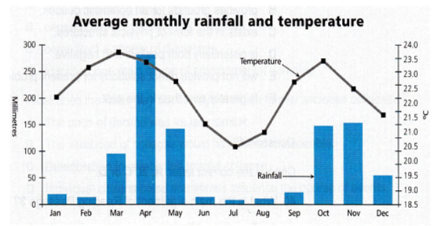

You should spend about 20 minutes on this task.
The graph and bar chart below the average monthly rainfall and temparature for
one region of East Africa
Summarise the information by selecting and reporting the main feature, and
making comparisons where relevant.
You should write at least 150 words.

Word Count: 0
You should spend about 40 minutes on this task.
Write about the following topic:
Meat production requires relatively more land than crop production. Some people
think that as land is becoming scarce, the world's meat consumption should be
reduced.
What measures could be taken to reduce the world's meat consumption? What kinds
of problems might such measures cause?
Give reasons for you answer, and include any relevant examples from your own knowledge or experience.
Write at least 250 words.
Word Count: 0